Richiedi modifiche alla documentazione
Richiedi modifiche alla documentazione Modifica questa pagina
Modifica questa pagina Scopri come collaborare
Scopri come collaborareGestione dei consigli sulla sicurezza informatica per le origini dati
Collaboratori
Utilizza la dashboard di protezione ransomware di BlueXP per ottenere una panoramica di alto livello della resilienza informatica di tutti gli ambienti di lavoro BlueXP (in precedenza Cloud Manager) e di altre fonti di dati. È possibile eseguire un drill-down in ciascuna area per trovare ulteriori dettagli e possibili soluzioni.
Dal menu di navigazione a sinistra di BlueXP, selezionare Governance > ransomware Protection.
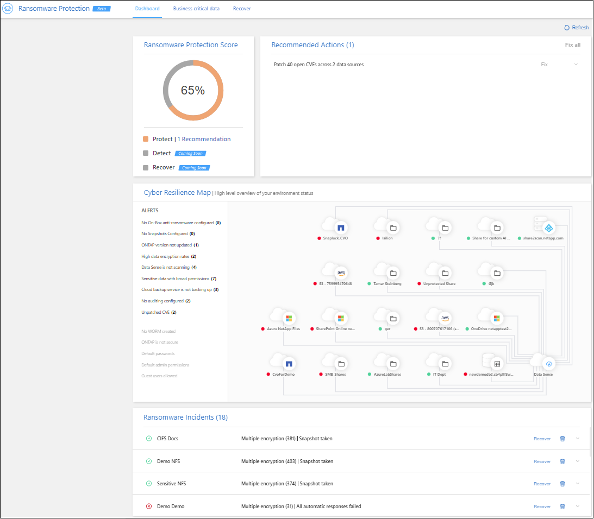
Ransomware Protection Score e Recommended Actions
Il pannello ransomware Protection Score (punteggio protezione ransomware) offre un modo semplice per verificare la resilienza dei dati a un attacco ransomware. Si tratta di un’aggregazione di tutte le azioni consigliate per migliorare la sicurezza dei dati e la resilienza informatica. Questo pannello funziona in combinazione con il pannello azioni consigliate. Il pannello ransomware Protection Score (punteggio protezione ransomware) è suddiviso in due parti:
-
Il punteggio di protezione generale per i dati (0-100% protetto).
Il punteggio si basa su un calcolo ponderato di tutte le possibili raccomandazioni.
-
Quante azioni consigliate sono disponibili per aumentare la protezione al 100%, se si implementano i suggerimenti.
I tre tipi di azioni consigliate sono conformi a. "Framework NIST per la cyber sicurezza":
-
Proteggere
-
Rilevare
-
Ripristinare
-
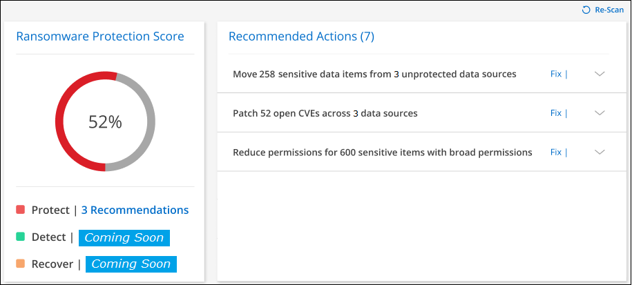
In questa pagina di esempio, sono disponibili sette azioni consigliate per la categoria "Protect" (protezione). Il primo suggerimento è pertinente per i file 258.
Questo pannello supporta gli ambienti di lavoro e le origini dati che sono stati aggiunti alla classificazione BlueXP.
Si noti che le raccomandazioni sono applicabili per origine dati. Pertanto, se lo stesso suggerimento è pertinente a 3 origini dati, verrà considerato come 3 raccomandazioni.
Fare clic su  Per espandere ciascuna azione consigliata, come mostrato di seguito.
Per espandere ciascuna azione consigliata, come mostrato di seguito.
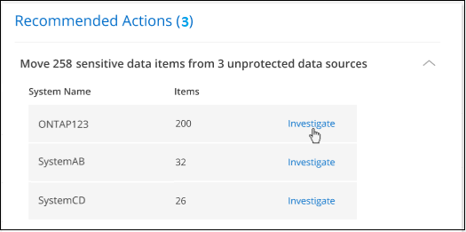
Per visualizzare l’elenco dettagliato dei dati identificati come azioni consigliate, fare clic sul pulsante indagare e si verrà reindirizzati alla pagina analisi classificazione BlueXP con l’elenco di tutti i file che soddisfano i criteri per l’azione consigliata.
Quindi, puoi decidere se applicare l’azione consigliata a tutti questi file o solo ad alcuni di essi.
Dopo aver risolto l’azione consigliata, il successivo aggiornamento del pannello ransomware Protection Score (ogni 5 minuti) regolerà il numero del punteggio. È inoltre possibile fare clic sul pulsante Re-Scan per aggiornare la pagina.
Elenco delle azioni consigliate
Queste sono le azioni consigliate e le soluzioni suggerite attualmente monitorate.
| Azione consigliata | Descrizione | Soluzione possibile |
|---|---|---|
Riduci le autorizzazioni per gli elementi sensibili X con autorizzazioni estese |
I file sensibili con permessi aperti sono stati trovati nelle origini dati in base alla classificazione BlueXP. Sono inclusi tutti i dati sensibili (dati personali e dati personali sensibili) che dispongono di autorizzazioni "aperte all’organizzazione" o "aperte al pubblico". |
Fare clic sul pulsante Investigate per ciascuna origine dati e si verrà reindirizzati alla pagina di analisi della classificazione di BlueXP, in cui è possibile visualizzare tutti i file sensibili a rischio e intraprendere ulteriori azioni per ridurre tale rischio. Ciò include la procedura per ridurre le ampie autorizzazioni su tali file. |
Sposta X elementi sensibili da Y origini dati non protette a posizioni sicure |
I dati sensibili sono stati trovati su origini dati non protette dalla classificazione BlueXP; si tratta di posizioni in cui il software di protezione ransomware non è in grado di proteggere i dati. In genere, la tua organizzazione IT dispone di policy che limitano i dati sensibili da determinate sedi aziendali. Questa azione consigliata consente di identificare i file con dati sensibili e spostarli in un’origine dati più sicura, dove è consentito memorizzare i dati sensibili *. |
È possibile utilizzare la classificazione BlueXP per spostare rapidamente questi file in un’origine dati meglio protetta. Utilizzerai la funzionalità di classificazione BlueXP per "Spostare i file di origine in una condivisione NFS". |
Patch X CVE aperte tra le origini dati Y |
I CVE senza patch (vulnerabilità ed esposizioni comuni) sono stati trovati nei sistemi ONTAP on-premise e/o nei sistemi Cloud Volumes ONTAP. Questi problemi vengono identificati solo se il prodotto BlueXP Digital Advisor (in precedenza Active IQ Digital Advisor) è integrato con i sistemi storage. Si tratta di vulnerabilità note sui sistemi storage NetApp che dispongono di correzioni per risolvere il problema CVE. I CVE NetApp sono elencati nella "Pagina Product Security (sicurezza del prodotto)". |
Fare clic sul pulsante Digital Advisor per ciascuna origine dati e si verrà reindirizzati alla pagina Security Vulnerabilities di BlueXP Digital Advisor. In questa sezione sono disponibili i dettagli relativi ai CVE aperti e l’azione consigliata per risolvere ogni CVE. Spesso la soluzione è aggiornare il software ONTAP sul sistema. "Scopri di più sulla pagina vulnerabilità di sicurezza". |
Configura i tuoi dati business-critical |
Non hai definito le tue policy sui dati business-critical nella pagina di configurazione dei dati business-critical. È importante identificare i dati business-critical, in modo da portare alla vostra attenzione eventuali problemi di ransomware con questi dati. |
Fare clic su |
Eseguire il backup di X file business-critical nelle origini dati Y |
In questo modo viene identificato il modo completo in cui le categorie di dati più importanti vengono sottoposte a backup nel cloud pubblico o privato utilizzando il backup e ripristino BlueXP. Il suggerimento visualizza i suggerimenti solo se sono stati definiti i dati business-critical. Ciò è importante nel caso in cui sia necessario ripristinare i dati a causa di un attacco ransomware. In questo suggerimento vengono identificati solo gli ambienti di lavoro ONTAP e Cloud Volumes ONTAP on-premise. |
Fare clic su |
Attivare le configurazioni di cyberstorage per origini dati X. |
Questo suggerimento indica se le funzionalità Six ONTAP che consentono di proteggere i dati sono attivate o disattivate. Tutti gli elementi devono essere abilitati. Gli elementi sono:
|
Per informazioni dettagliate su come abilitare queste funzionalità Six ONTAP, consultare i collegamenti nella colonna precedente. |
Mappa di resilienza informatica
La mappa di resilienza informatica è l’area principale della dashboard. Consente di visualizzare tutti gli ambienti di lavoro e le origini dati in modo visivo e di visualizzare informazioni pertinenti sulla cyber-resilienza.
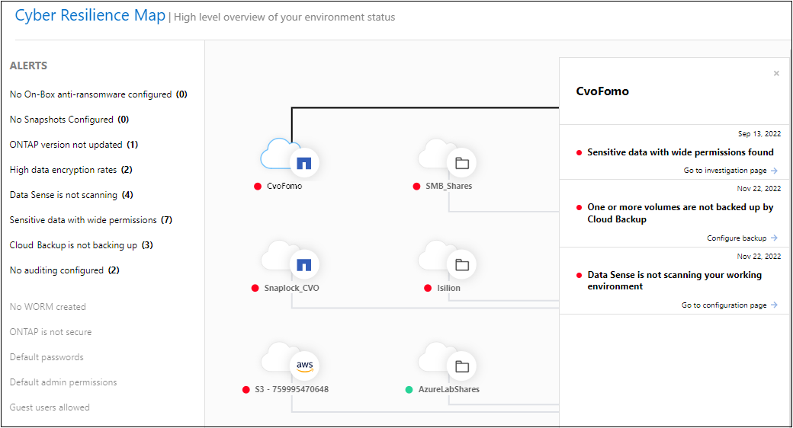
La mappa è composta da tre parti:
- Pannello sinistro
-
Mostra un elenco di avvisi per i quali il servizio sta monitorando tutte le origini dati. Indica inoltre il numero di ciascun avviso attivo nell’ambiente. Avere un numero elevato di un tipo di avviso può essere un buon motivo per tentare di risolvere prima tali avvisi.
- Pannello centrale
-
Mostra tutte le origini dati, i servizi e Active Directory in un formato grafico. Gli ambienti sani hanno un indicatore verde e gli ambienti con avvisi hanno un indicatore rosso.
- Pannello di destra
-
Dopo aver fatto clic su un’origine dati con un indicatore rosso, questo pannello mostra gli avvisi relativi a tale origine dati e fornisce suggerimenti per risolvere l’avviso. Gli avvisi vengono ordinati in modo che vengano elencati per primi gli avvisi più recenti. Molti consigli ti portano a un altro servizio BlueXP in cui puoi risolvere il problema.
Questi sono gli avvisi attualmente monitorati e le soluzioni suggerite.
| Avviso | Descrizione | Risoluzione dei problemi |
|---|---|---|
Velocità di crittografia dei dati elevate rilevate |
Si è verificato un aumento anomalo della percentuale di file crittografati o danneggiati nell’origine dati. Ciò significa che negli ultimi 7 giorni è stato registrato un aumento superiore al 20% della percentuale di file crittografati. Ad esempio, se il 50% dei file è crittografato, un giorno dopo questo numero aumenta fino al 60%, viene visualizzato questo avviso. |
Fare clic sul collegamento per avviare "Pagina di analisi della classificazione BlueXP". È possibile selezionare i filtri per gli specifici ambiente di lavoro e Categoria (crittografata e corrotta) per visualizzare l’elenco di tutti i file crittografati e corrotti. |
Dati sensibili con permessi ampi trovati |
I dati sensibili sono presenti nei file e il livello di autorizzazione di accesso è troppo elevato in un’origine dati. |
Fare clic sul collegamento per avviare "Pagina di analisi della classificazione BlueXP". È possibile selezionare i filtri specifici per Working Environment, Sensitivity Level (Sensitive Personal) e Open Permissions per visualizzare l’elenco dei file che presentano questo problema. |
Non viene eseguito il backup di uno o più volumi utilizzando il backup e ripristino BlueXP |
Alcuni volumi nell’ambiente di lavoro non vengono protetti utilizzando "Backup e ripristino BlueXP". |
Fare clic sul collegamento per avviare il backup e il ripristino di BlueXP e identificare i volumi di cui non viene eseguito il backup nell’ambiente di lavoro, quindi decidere se attivare i backup su tali volumi. |
Uno o più repository (volumi, bucket, ecc.) nelle origini dati non vengono sottoposti a scansione dalla classificazione BlueXP |
Alcuni dati nelle origini dati non vengono sottoposti a scansione "Classificazione BlueXP" identificare i problemi di conformità e privacy e trovare opportunità di ottimizzazione. |
Fare clic sul collegamento per avviare la classificazione BlueXP e attivare la scansione e la mappatura degli elementi che non vengono sottoposti a scansione. |
L’anti-ransomware on-box non è attivo per tutti i volumi |
Alcuni volumi nel sistema ONTAP on-premise non dispongono di "Funzionalità anti-ransomware di NetApp" attivato. |
Fare clic sul collegamento per accedere al Rafforzare il pannello dell’ambiente ONTAP e all’ambiente di lavoro con il problema. Qui è possibile analizzare come risolvere il problema al meglio. |
La versione di ONTAP non è aggiornata |
La versione del software ONTAP installata sui cluster non è conforme alle raccomandazioni del "Guida al rafforzamento della sicurezza di NetApp per sistemi ONTAP". |
Fare clic sul collegamento per accedere al Rafforzare il pannello dell’ambiente ONTAP e all’ambiente di lavoro con il problema. Qui è possibile analizzare come risolvere il problema al meglio. |
Snapshot non configurate per tutti i volumi |
Alcuni volumi nell’ambiente di lavoro non vengono protetti dalla creazione di snapshot di volumi. |
Fare clic sul collegamento per accedere al Rafforzare il pannello dell’ambiente ONTAP e all’ambiente di lavoro con il problema. Qui è possibile analizzare come risolvere il problema al meglio. |
Il controllo delle operazioni dei file non è attivato per tutte le SVM |
Alcune VM di storage nell’ambiente di lavoro non hanno il controllo del file system abilitato. Si consiglia di tenere traccia delle azioni degli utenti sui file. |
Fare clic sul collegamento per accedere al Rafforzare il pannello dell’ambiente ONTAP e all’ambiente di lavoro con il problema. Qui è possibile verificare se è necessario attivare l’audit NAS sulle SVM. |
Incidenti ransomware rilevati sui sistemi
Gli incidenti ransomware rilevati sui sistemi gestiti verranno visualizzati come avvisi nel pannello ransomware Incidents. Ciò include eventi di crittografia, estensioni di file sospette, attività ransomware e attività dannose. Il pannello visualizza il tipo di incidente e se sono state eseguite azioni automatiche per tentare di risolvere il problema. Ad esempio, una copia Snapshot del volume potrebbe essere generata e inviata al cloud.
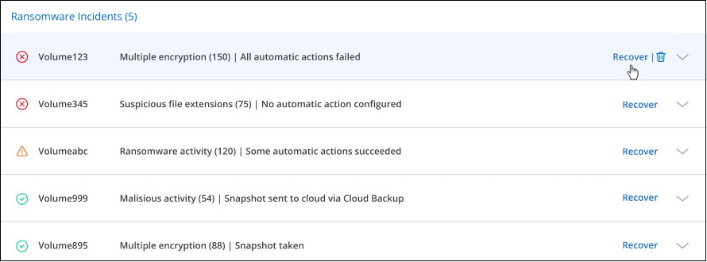
Il supporto attuale è per i cluster ONTAP on-premise che eseguono la protezione ransomware autonoma (ARP). ARP utilizza l’analisi dei carichi di lavoro in ambienti NAS (NFS e SMB) per rilevare e avvisare in modo proattivo in caso di attività anomale che potrebbero indicare un attacco ransomware. "Scopri di più sulla protezione ransomware autonoma di ONTAP".
Fare clic su  per espandere un incidente e visualizzare il numero di file crittografati identificati nel volume sospetto, i tipi di estensioni file e l’ora in cui si è verificato l’attacco.
per espandere un incidente e visualizzare il numero di file crittografati identificati nel volume sospetto, i tipi di estensioni file e l’ora in cui si è verificato l’attacco.
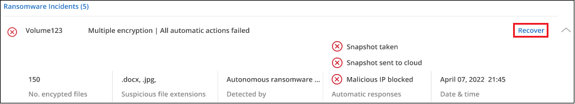
Fare clic sul pulsante Recover (Ripristina) se si desidera tentare di ripristinare l’attacco ransomware. In questo modo, si può accedere alla dashboard di protezione ransomware di BlueXP, in cui è possibile sostituire il volume con una copia Snapshot precedente che non è stata interessata dal ransomware. "Scopri come utilizzare la dashboard di ripristino".
-
È necessario disporre di un cluster ONTAP on-premise con ONTAP 9.11 o superiore.
-
È necessario disporre della licenza Anti_ransomware (ONTAP 9.11.1 +) installata su almeno un nodo del cluster.
-
Per ogni volume che si desidera proteggere deve essere attivato ARP. "Scopri come attivare la protezione ransomware autonoma".
-
NetApp Autonomous ransomware Protection (ARP) deve essere stata abilitata per un periodo di apprendimento iniziale (noto anche come "dry run") per 30 giorni prima di passare alla "modalità attiva", in modo che abbia abbastanza tempo per valutare le caratteristiche del carico di lavoro e segnalare correttamente gli attacchi ransomware sospetti.
Dati elencati in base ai file crittografati
Il pannello Encrypted Files mostra le prime 4 origini dati con la percentuale più alta di file crittografati nel tempo. Si tratta in genere di elementi protetti da password. Ciò avviene confrontando i tassi di crittografia negli ultimi 7 giorni per vedere quali origini dati hanno un aumento superiore al 20%. Un aumento di questa quantità potrebbe significare che il ransomware è già attaccato al sistema.
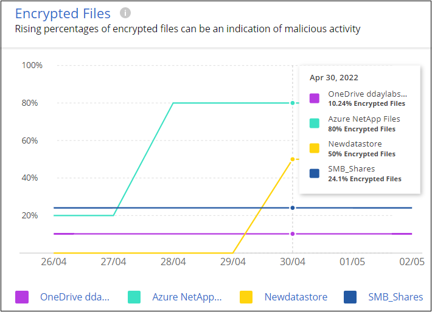
Fare clic su una riga per una delle origini dati per visualizzare i risultati filtrati in "Pagina di analisi della classificazione BlueXP" in modo da poter approfondire le indagini.
Repository di dati top per sensibilità dei dati
Il pannello Top Data Repository by Sensitivity Level elenca fino ai primi quattro repository di dati (ambienti di lavoro e origini dati) che contengono gli elementi più sensibili. Il grafico a barre per ciascun ambiente di lavoro è suddiviso in:
-
Dati non sensibili
-
Dati personali
-
Dati personali sensibili
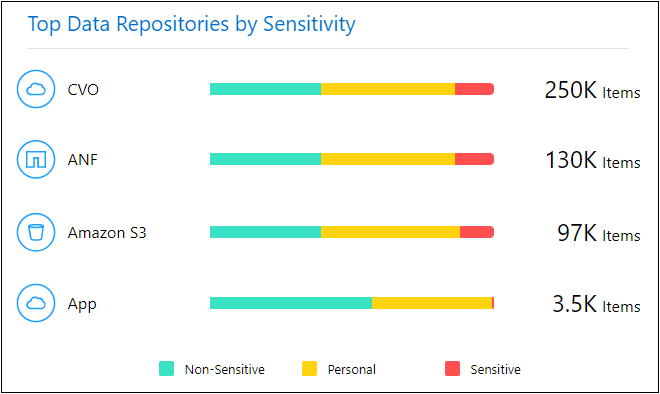
È possibile passare il mouse su ciascuna sezione per visualizzare il numero totale di elementi in ciascuna categoria.
Fare clic su ciascuna area per visualizzare i risultati filtrati in "Pagina di analisi della classificazione BlueXP" in modo da poter approfondire le indagini.
Controllo Domain Administrative Group
Il pannello di controllo Domain Administrative Group mostra gli utenti più recenti che sono stati aggiunti ai gruppi di amministratori di dominio, in modo da verificare se tutti gli utenti devono essere autorizzati in tali gruppi. Devi avere "Integrazione di un Active Directory globale" Nella classificazione BlueXP affinché questo pannello sia attivo.
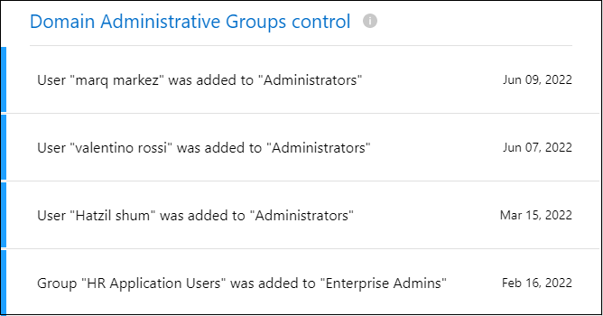
I gruppi amministrativi predefiniti includono "amministratori", "amministratori di dominio", "amministratori aziendali", "amministratori chiave aziendali" e "amministratori chiave".
Dati elencati in base ai tipi di autorizzazioni aperte
Il pannello Open Permissions mostra la percentuale per ciascun tipo di autorizzazione esistente per tutti i file sottoposti a scansione. Il grafico è fornito dalla classificazione BlueXP e mostra i seguenti tipi di permessi:
-
Nessun accesso aperto
-
Aperto all’organizzazione
-
Aperto al pubblico
-
Accesso sconosciuto
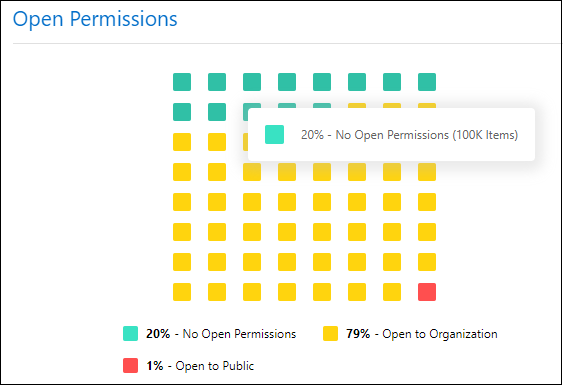
È possibile passare il mouse su ciascuna sezione per visualizzare la percentuale e il numero totale di file in ciascuna categoria.
Fare clic su ciascuna area per visualizzare i risultati filtrati in "Pagina di analisi della classificazione BlueXP" in modo da poter approfondire le indagini.
Vulnerabilità del sistema storage
Il pannello vulnerabilità del sistema di storage mostra il numero totale di vulnerabilità di sicurezza alte, medie e basse rilevate dal tool di consulenza digitale BlueXP su ciascuno dei cluster ONTAP. Le vulnerabilità elevate devono essere immediatamente considerate per assicurarsi che i sistemi non siano aperti per gli attacchi.
-
BlueXP Connector deve essere installato in sede e non presso un cloud provider.
-
È necessario disporre di un cluster ONTAP on-premise
-
Il cluster viene configurato in BlueXP Digital Advisor
-
Per visualizzare i cluster e l’interfaccia utente di BlueXP Digital Advisor, è necessario aver registrato un account NSS esistente in BlueXP.
Nota: È possibile visualizzare direttamente BlueXP Digital Advisor selezionando Health > Digital Advisor dal menu BlueXP.
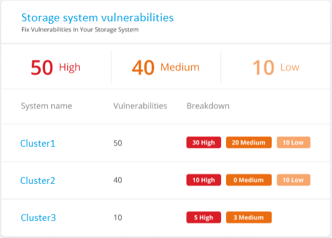
Fare clic sul tipo di vulnerabilità (alta, media, bassa) che si desidera visualizzare per uno dei cluster e si viene reindirizzati alla pagina Security Vulnerabilities (vulnerabilità di protezione) in BlueXP digital ADVISOR. (Ulteriori informazioni su questa pagina sono disponibili nella "Documentazione di BlueXP Digital Advisor".) È possibile visualizzare le vulnerabilità e seguire l’azione consigliata per risolvere il problema. Spesso la soluzione è aggiornare il software ONTAP con una versione a punti o una versione completa che risolve la vulnerabilità.
Stato della protezione avanzata dei sistemi ONTAP
Il pannello rafforzare l’ambiente ONTAP fornisce lo stato di alcune impostazioni nei sistemi ONTAP che monitorano la sicurezza dell’implementazione in base a. "Guida al rafforzamento della sicurezza di NetApp per sistemi ONTAP" e a. "Funzione anti-ransomware di ONTAP" che rileva e avvisa in modo proattivo in caso di attività anomale.
Puoi rivedere i consigli e decidere come affrontare i potenziali problemi. È possibile seguire la procedura per modificare le impostazioni dei cluster, rinviare le modifiche a un’altra volta o ignorare il suggerimento.
Questo pannello supporta attualmente ONTAP on-premise, Cloud Volumes ONTAP e Amazon FSX per i sistemi NetApp ONTAP.
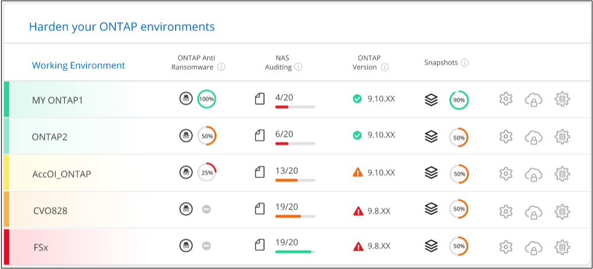
Le impostazioni monitorate includono:
| Obiettivo di protezione avanzata | Descrizione | Risoluzione dei problemi |
|---|---|---|
ONTAP Anti-ransomware |
La percentuale di volumi con anti-ransomware on-box attivato. Valido solo per sistemi ONTAP on-premise. Un’icona di stato verde indica che sono attivati più del 85% dei volumi. Giallo indica che il 40-85% è abilitato. Il rosso indica che < 40% sono abilitati. |
"Scopri come attivare l’anti-ransomware sui tuoi volumi" Utilizzo di System Manager. |
Audit NAS |
Il numero di VM storage per le quali è stato abilitato il controllo del file system. Un’icona di stato verde indica che oltre il 85% delle SVM ha attivato il controllo del file system NAS. Giallo indica che il 40-85% è abilitato. Il rosso indica che < 40% sono abilitati. |
"Scopri come abilitare l’auditing NAS su SVM" Utilizzo della CLI. |
Versione di ONTAP |
La versione del software ONTAP installata sui cluster. Un’icona di stato verde indica che la versione è aggiornata. Un’icona gialla indica che il cluster si trova dietro di 1 o 2 versioni di patch o 1 versione minore per i sistemi on-premise o dietro di 1 versione principale per Cloud Volumes ONTAP. Un’icona rossa indica che il cluster si trova dietro 3 versioni di patch, o 2 versioni minori, o 1 versione principale per i sistemi on-premise, o dietro 2 versioni principali per Cloud Volumes ONTAP. |
"Scopri il modo migliore per aggiornare i cluster on-premise" oppure "I tuoi sistemi Cloud Volumes ONTAP". |
Snapshot |
È la funzionalità di snapshot attivata sui volumi di dati e la percentuale di volumi con copie Snapshot. Un’icona di stato verde indica che oltre il 85% dei volumi ha attivato gli snapshot. Giallo indica che il 40-85% è abilitato. Il rosso indica che < 40% sono abilitati. |
"Scopri come attivare le snapshot dei volumi sui cluster on-premise", o. "Sui sistemi Cloud Volumes ONTAP", o. "Su FSX per sistemi ONTAP". |
Stato delle autorizzazioni sui dati aziendali critici
Il pannello analisi delle autorizzazioni dei dati business-critical mostra lo stato delle autorizzazioni dei dati critici per la tua azienda. In questo modo puoi valutare rapidamente il livello di protezione dei dati business-critical.
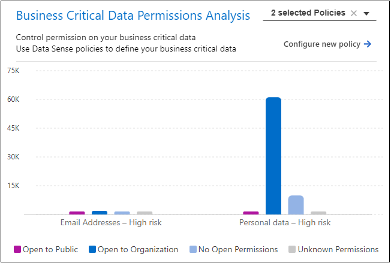
Questo pannello mostra i dati in base alle policy selezionate nella pagina Business Critical Data Configuration. Mostra i dati delle due policy business-critical con il maggior numero di file totali. Fare clic sul collegamento per visualizzare o definire criteri aggiuntivi. "Scopri di più sulla configurazione e la selezione delle policy per i dati business-critical".
Il grafico mostra l’analisi delle autorizzazioni di tutti i dati che soddisfano i criteri delle policy. Elenca il numero di elementi che sono:
-
Open to public permissions (autorizzazioni aperte al pubblico) - gli elementi che la classificazione BlueXP considera aperti al pubblico
-
Open to organization permissions (autorizzazioni aperte all’organizzazione) - gli elementi che la classificazione BlueXP considera aperti all’organizzazione
-
No open permissions (Nessuna autorizzazione aperta) - gli elementi che la classificazione BlueXP considera come nessuna autorizzazione aperta
-
Unknown permissions (autorizzazioni sconosciute) - gli elementi che la classificazione BlueXP considera come autorizzazioni sconosciute
Passare il mouse su ciascuna barra dei grafici per visualizzare il numero di risultati in ciascuna categoria. Fare clic su una barra e su "Pagina di analisi della classificazione BlueXP" viene visualizzato in modo da poter esaminare ulteriormente quali elementi dispongono di autorizzazioni aperte e se è necessario apportare modifiche alle autorizzazioni del file.
Stato del backup dei dati aziendali critici
Il pannello Backup Status mostra come vengono protette le diverse categorie di dati utilizzando il backup e ripristino BlueXP. In questo modo viene identificato il backup completo delle categorie di dati più importanti nel caso in cui sia necessario eseguire il ripristino a causa di un attacco ransomware. Si tratta di una rappresentazione visiva del numero di elementi di una categoria specifica in un ambiente di lavoro di cui viene eseguito il backup.
In questo pannello verranno visualizzati solo gli ambienti di lavoro ONTAP e Cloud Volumes ONTAP on-premise per i quali è già stato eseguito il backup utilizzando la classificazione BlueXP per il backup e ripristino.
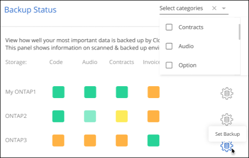
Inizialmente questo pannello mostra i dati in base alle categorie predefinite selezionate. Tuttavia, è possibile selezionare le categorie di dati da tenere traccia, ad esempio file di codici, contratti e così via Consulta l’elenco completo di "categorie" Disponibili dalla classificazione BlueXP per gli ambienti di lavoro. Quindi selezionare fino a 4 categorie.
Una volta popolati i dati, passare il mouse su ogni quadrato dei grafici per visualizzare il numero di file di cui viene eseguito il backup di tutti i file della stessa categoria nell’ambiente di lavoro. Un quadrato verde indica che è in corso il backup del 85% o più dei file. Un quadrato giallo indica che è in corso il backup tra il 40% e il 85% dei file. Inoltre, un quadrato rosso indica che il backup dei file è pari o inferiore al 40%.
È possibile fare clic sul pulsante Backup alla fine della riga per accedere all’interfaccia di backup e ripristino di BlueXP e abilitare il backup su più volumi in ciascun ambiente di lavoro.
Dati nei volumi protetti mediante SnapLock
È possibile utilizzare la tecnologia NetApp SnapLock sui volumi ONTAP per conservare i file in forma non modificata a scopo normativo e di governance. È possibile assegnare file e copie Snapshot allo storage WORM (Write Once, Read Many) e impostare periodi di conservazione per questi dati protetti DA WORM. "Scopri di più su SnapLock".
Il pannello critical data immutability mostra il numero di elementi negli ambienti di lavoro protetti da modifiche ed eliminazioni sullo storage WORM grazie alla tecnologia ONTAP SnapLock. Ciò consente di visualizzare la quantità di dati che contiene una copia immutabile, in modo da poter comprendere meglio i piani di backup e ripristino rispetto al ransomware.
-
BlueXP Connector deve essere installato in sede e non presso un cloud provider.
-
È necessario disporre di un cluster ONTAP on-premise
-
È necessario disporre di una licenza SnapLock installata su almeno un nodo del cluster
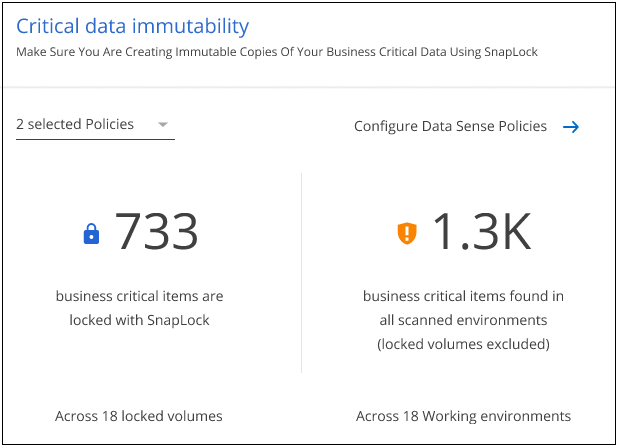
Questo pannello mostra i dati in base alle policy selezionate nella pagina Business Critical Data Configuration. Fare clic sul collegamento per visualizzare o definire criteri aggiuntivi. "Scopri di più sulla configurazione e la selezione delle policy per i dati business-critical".
Il pannello mostra le seguenti informazioni per i dati che corrispondono ai criteri selezionati:
-
Il numero di file business-critical in tutti gli ambienti di lavoro sottoposti a scansione configurati per l’utilizzo di SnapLock.
-
Il numero di file business-critical in tutti gli ambienti di lavoro sottoposti a scansione, esclusi quelli configurati per SnapLock. Alcuni di questi file potrebbero essere protetti con un meccanismo diverso da SnapLock.
I criteri di classificazione BlueXP che includono i seguenti filtri non sono disponibili nell’elenco a discesa per i criteri selezionati perché escluderanno importanti aree di ricerca:
-
Nome dell’ambiente di lavoro
-
Tipo di ambiente di lavoro
-
Repository di storage
-
Percorso del file
Pertanto, quando crei le policy per visualizzare i dati aziendali critici nel pannello critical data immutability, assicurati di tenerlo presente.